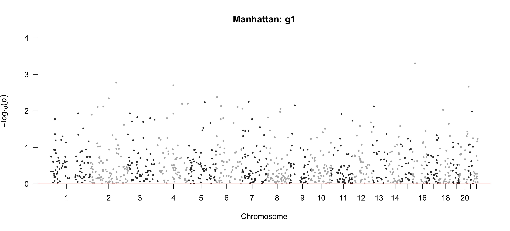
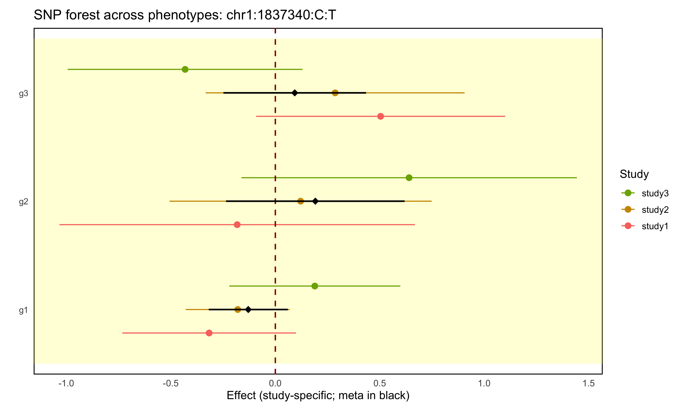
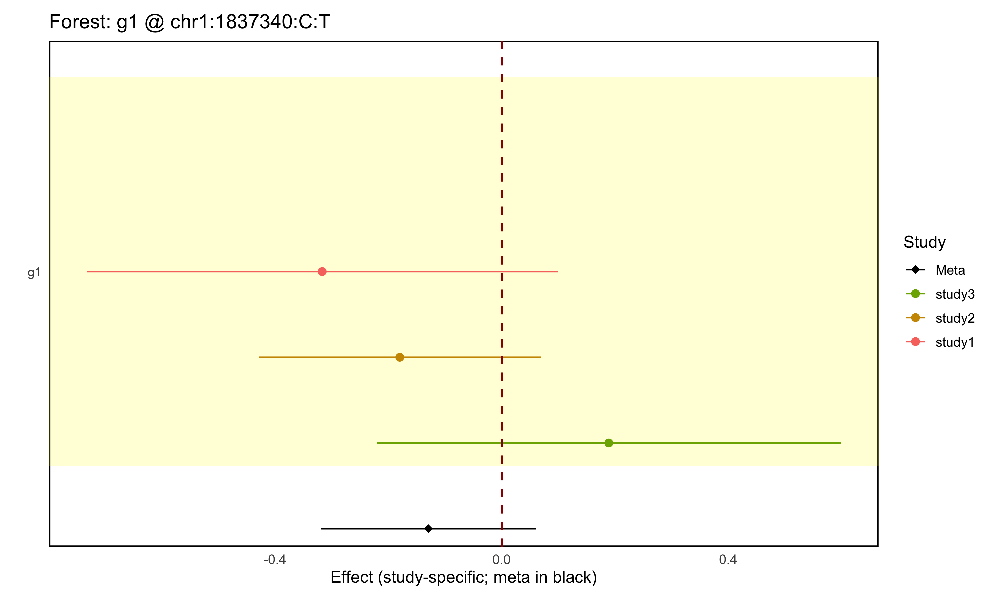

example/output/plot/combined_hits.png: combined overview across phenotypes using the best hit per SNP.This page explains how to run the PALM-mGWAS R package: key functions, required inputs, outputs, and visualization workflows.
Info.R creates SNP, feature, and sequencing-depth summaries.step0_checkInput.R checks IID consistency across abundance, covariates, and PLINK .fam, and reorders tables to match genotype order.step1_null.R fits the PALM null model from abundance (and optional covariates).step2_summary.R reads PLINK genotypes and writes per-phenotype estimates.step3_meta.R meta-analyzes multiple studies and adds meta_* columns.Visualization.R generates Manhattan and forest plots.install.packages(c("PALM","snpStats","data.table","dplyr","ggplot2","qqman","stringr","tibble"))# 1) install pixi (if not yet)
curl -fsSL https://pixi.sh/install.sh | bash
# 2) set PATH if needed (depends on installer hint)
# 3) in repo root, create env and fetch deps
pixi install
# 4) run workflows with pixi run ... (see steps below)# build (from repo root)
docker build -t palm-mgwas .
# run interactively, mounting your data
docker run --rm -it -v "$PWD":/work -w /work palm-mgwas bash
# inside the container, call packaged scripts (pixi already available)
pixi run --manifest-path=/app/pixi.toml Rscript /app/extdata/step1_null.R --helpThe Dockerfile installs pixi, PALM, PLINK1.9, and wrapper scripts under /app/extdata/; mount your data into the container and reference it via absolute paths (e.g., /work/...). Info and visualization scripts can be run in any order depending on your pipeline.
| Type | Format | Notes |
|---|---|---|
| Abundance (abd) | TSV; first column sample ID, other columns features | Column names = feature IDs; sample IDs must align with genotype files. |
| Covariates (optional) | TSV; first column sample ID, remaining numeric/factor covariates | Sample set should cover the abundance table. |
| Genotype | PLINK trio: .bed/.bim/.fam | .fam IID must match abundance samples; FID can be used as cluster. |
| Function | Key Args | Output |
|---|---|---|
run_info(geno_file, abd_file, output_snp, output_feature, output_seqdepth) |
geno_file: PLINK prefix; abd_file: abundance path | Three TSVs: SNP info, feature prevalence, sequencing depth per sample |
step0_checkInput.R --abdFile --covFile --genoFile |
abdFile: abundance table; covFile: covariates; genoFile: PLINK prefix |
Overwrites abdFile/covFile if needed so row order matches PLINK .fam IID order |
step1_null.R --abdFile --covFile --outputPrefix |
abdFile: abundance; covFile: optional or NULL; outputPrefix: output prefix |
outputPrefix.rda containing modglmm (PALM null model) |
step2_summary.R --inFile --NULLmodelFile --PALMOutputFile [--chrom] [--correct] [--useCluster] |
inFile: PLINK prefix; NULLmodelFile: Step1 result; chrom: optional chromosome filter |
Per-phenotype TSVs: PALMOutputFile_ with SNP/CHR/POS/est/stderr/pval |
step3_meta.R --studyDirList --inPrefix --outDir --outPrefix [--keepHet] [--metaMethod] [--featuresFile] |
studyDirList: TSV of studyID dir; inPrefix: Step2 file prefix |
List or TSVs with meta_est/meta_stderr/meta_pval plus per-study columns |
Visualization.R --metaDir --plotDir [--pattern] [--pheno] [--snp] [--out] ... |
Plot Step3 meta outputs or Step2-style per-study results; mode selected from --pheno/--snp |
JPEG/PNG figures and optional toplist text |
pixi run --manifest-path=${WORK}/pixi.toml Rscript ${WORK}/extdata/Info.R \
--genoFile=${genoPrefix} \
--abdFile=${abdFile} \
--outputSnpFile=${outputSnpFile} \
--outputFeatureFile=${outputFeatureFile} \
--outputSeqDepthFile=${outputSeqDepthFile}Run the packaged CLI; no need to call exported R functions directly.
.bed/.bim/.fam) and abundance TSV (sample IDs in column 1).snp_info.tsv (CHR, SNP, POS, A1, A2, N, AF);
feature_info.tsv (FeatureID, Prevalence, AvgProportion);
seqdepth.tsv (SampleID, SeqDepth).
pixi run --manifest-path=${WORK}/pixi.toml Rscript ${WORK}/extdata/step0_checkInput.R \
--abdFile=${abdFile} \
--covFile=${covFile} \
--genoFile=${genoPrefix}.fam contain the same IID set before modeling.abdFile and covFile in PLINK .fam order..fam, or non-identical IID sets.pixi run --manifest-path=${WORK}/pixi.toml Rscript ${WORK}/extdata/step1_null.R \
--abdFile=${abdFile} \
--covFile=${covFile} \
--outputPrefix=${palm1_step1_prefix}outputPrefix.rda containing modglmm; directories are created if missing.--covFile=NULL to run covariate-free; the CLI converts empty string or NULL to R NULL.abdFile, covFile, outputPrefix.pixi run --manifest-path=${WORK}/pixi.toml Rscript ${WORK}/extdata/step2_summary.R \
--inFile=${genoPrefix} \
--NULLmodelFile=${palm1_step1_prefix}.rda \
--PALMOutputFile=${palm1_step2_prefix} \
--chrom=${chrom} \
--correct=${correct} \
--useCluster=${useCluster}.bed/.bim/.fam), null model .rda.PREFIX_.txt ; columns SNP, CHR, POS, est, stderr, pval.chr1:12345:REF:ALT.--chrom=1 or --chrom=chr1 to restrict, otherwise leave empty to keep all chromosomes.useCluster = TRUE, FID from .fam is passed to PALM; automatically disabled when all FIDs are 0.PALM::palm.get.summary(); the CLI converts NULL or empty string to R NULL.inFile, NULLmodelFile, PALMOutputFile, chrom, correct, useCluster.# studyDirList TSV lines: studyIDdir (e.g., "study1\t${outputFolder}/study1")
pixi run --manifest-path=${WORK}/pixi.toml Rscript ${WORK}/extdata/step3_meta.R \
--studyDirList=${studyFile} \
--inPrefix=${metaPrefix} \
--outDir=${metaDir} \
--outPrefix=${metaPrefix} \
--keepHet=TRUE \
--metaMethod=EE \
--featuresFile=NULL studyDirList is a text file with two columns per line: studyID and Step2 output directory. Files inside those directories must match inPrefix + <pheno> + ".txt".outDir named outPrefix<pheno>.txt, containing meta_est, meta_stderr, meta_pval, optional meta_pval.het, plus per-study study*_est/study*_stderr.--keepHet=FALSE to drop the het column and mimic 6-column Step2 format.--metaMethod is passed to metafor::rma(); default is EE.--featuresFile is optional and should contain one phenotype per line; use NULL or omit content to infer features automatically.studyDirList, inPrefix, outDir, outPrefix, keepHet, metaMethod, featuresFile.pixi run --manifest-path=${WORK}/pixi.toml Rscript ${WORK}/extdata/Visualization.R \
--metaDir=${metaDir} \
--pattern=${pattern} \
--plotDir=${plotDir} \
--pheno=${pheno:-NA} \
--snp=${snp:-NA} \
--out=${outFile:-NA} \
--pCut=${pCut} \
--sigOnlyPheno=FALSE \
--printCut=1e-8 \
--showMeta=${showMeta} \
--showHet=${showHet} \
--width=${plotWidth} \
--height=${plotHeight}--pheno and no --snp gives a combined overview across phenotypes and writes combined_hits.png.--pheno only gives a phenotype-specific Manhattan plot and QQ plot.--snp only gives a forest plot for one SNP across all phenotypes found in the input files.--pheno and --snp give a forest plot for one phenotype-SNP pair across studies.--plotDir; if --out is not provided, the script auto-generates a file name based on mode, phenotype, and SNP.--metaDir can point to Step3 outputs or any directory of Step2/Step3-like files matching --pattern.metaDir, plotDir, pattern, pheno, snp, out, pCut, sigOnlyPheno, printCut, showMeta, showHet, width, height.The repository already contains a small three-study example under example/input/ and matching outputs under example/output/. These files are useful for understanding the expected formats before running your own data.
# file: example/input/study1/abd.txt
IID g1 g2 g3
ID_001 729 73 835
ID_002 1824 17 91
ID_003 581 0 31
ID_004 2349 0 8833The first column is sample ID (IID), and each remaining column is a microbial feature/phenotype (g1, g2, g3).
# file: example/input/study1/cov.txt
IID AGE SEX PC01 PC02 PC03 PC04 PC05
ID_001 0.199426813268783 0 -0.0109014 0.0462363 -0.0272948 -0.00748014 0.00470315
ID_002 -0.829764647357603 0 0.00637629 -0.00200517 -0.00108298 0.00540607 0.000137391
ID_003 -1.03560293948288 0 0.0103864 -0.00676172 0.000785164 -0.00612183 0.00100164
ID_004 -0.848477219368992 1 0.0108307 -0.00694051 -0.000638697 -0.0077418 0.00113121The first column must still be the sample ID. Remaining columns can be numeric or factor-like covariates used in the null model.
# file: example/input/study_dirs.txt
study1 /Users/peterli/Desktop/PALM-mGWAS/example/output/study1
study2 /Users/peterli/Desktop/PALM-mGWAS/example/output/study2
study3 /Users/peterli/Desktop/PALM-mGWAS/example/output/study3This file lists the studies included in the example meta-analysis and the location of each study's result directory. Each line maps one study ID to one folder.
The genotype input for each study is stored as a PLINK dataset with prefix example/input/study1/geno, corresponding to the files geno.bed, geno.bim, and geno.fam. These files are not printed here because PLINK genotype data are stored in special formats rather than plain text tables.
The same example data can be read as a concrete workflow: what goes in, which script is called, which parameters matter, and what files come out.
Input: example/input/study1/abd.txt and PLINK files example/input/study1/geno.bed/.bim/.fam.
pixi run --manifest-path=${WORK}/pixi.toml Rscript ${WORK}/extdata/Info.R \
--genoFile=${WORK}/example/input/study1/geno \
--abdFile=${WORK}/example/input/study1/abd.txt \
--outputSnpFile=${WORK}/example/output/study1/info_snp.txt \
--outputFeatureFile=${WORK}/example/output/study1/info_feature.txt \
--outputSeqDepthFile=${WORK}/example/output/study1/info_seqdepth.txtOutput: three QC tables, including example/output/study1/info_feature.txt shown below.
# file: example/output/study1/info_snp.txt
CHR SNP POS A1 A2 N AF
1 chr1:1837340:C:T 1837340 T C 100 0.875
1 chr1:2261200:G:C 2261200 C G 100 0.505
1 chr1:14678191:A:C 14678191 C A 100 0.54
1 chr1:14985097:C:T 14985097 T C 100 0.825This table summarizes marker-level information from the PLINK genotype input, including chromosome, position, alleles, sample size, and allele frequency.
# file: example/output/study1/info_feature.txt
FeatureID Prevalence AvgProportion
g1 1 0.598438833276798
g2 0.64 0.113333766863047
g3 0.79 0.288227399860156This tells users, for example, that g1 appears in all samples in study1, while g2 is less prevalent.
# file: example/output/study1/info_seqdepth.txt
SampleID SeqDepth
ID_001 1637
ID_002 1932
ID_003 612
ID_004 11182This table reports total sequencing depth per sample and is useful for spotting unusually low-depth or high-depth samples before downstream analysis.
Input: example/input/study1/abd.txt, example/input/study1/cov.txt, and example/input/study1/geno.fam.
# Step0 checks that IID sets match and reorders abd/cov if needed
pixi run --manifest-path=${WORK}/pixi.toml Rscript ${WORK}/extdata/step0_checkInput.R \
--abdFile=${WORK}/example/input/study1/abd.txt \
--covFile=${WORK}/example/input/study1/cov.txt \
--genoFile=${WORK}/example/input/study1/geno
# Step1 fits the null model used by association testing
pixi run --manifest-path=${WORK}/pixi.toml Rscript ${WORK}/extdata/step1_null.R \
--abdFile=${WORK}/example/input/study1/abd.txt \
--covFile=${WORK}/example/input/study1/cov.txt \
--outputPrefix=${WORK}/example/output/study1/step1_allphenoOutput: example/output/study1/step1_allpheno.rda, which is then passed into Step2 as --NULLmodelFile.
Input: PLINK prefix example/input/study1/geno and null model example/output/study1/step1_allpheno.rda.
pixi run --manifest-path=${WORK}/pixi.toml Rscript ${WORK}/extdata/step2_summary.R \
--inFile=${WORK}/example/input/study1/geno \
--NULLmodelFile=${WORK}/example/output/study1/step1_allpheno.rda \
--PALMOutputFile=${WORK}/example/output/study1/step2_allchr \
--chrom=NULL \
--correct=NULL \
--useCluster=TRUEOutput: one file per phenotype, such as example/output/study1/step2_allchr_g1.txt, example/output/study1/step2_allchr_g2.txt, and so on.
# file: example/output/study1/step2_allchr_g1.txt
SNP CHR POS est stderr pval
chr1:1837340:C:T 1 1837340 -0.316932872955275 0.21203715194326 0.134991594407711
chr1:2261200:G:C 1 2261200 0.10676258024368 0.133826875292607 0.42500608166281
chr1:14678191:A:C 1 14678191 0.0971053087659925 0.132707270963333 0.464336061914255
chr1:14985097:C:T 1 14985097 -0.121627364114563 0.173042255456721 0.482132612055732Each Step2 file corresponds to one phenotype. Here, g1 has one file containing association statistics for all tested SNPs.
Input: example/input/study_dirs.txt plus Step2 outputs from example/output/study1, study2, and study3.
pixi run --manifest-path=${WORK}/pixi.toml Rscript ${WORK}/extdata/step3_meta.R \
--studyDirList=${WORK}/example/input/study_dirs.txt \
--inPrefix=step2_allchr_ \
--outDir=${WORK}/example/output/meta \
--outPrefix=step3_meta_ \
--keepHet=TRUE \
--metaMethod=EE \
--featuresFile=NULLOutput: one meta file per phenotype, such as example/output/meta/step3_meta_g1.txt, step3_meta_g2.txt, and step3_meta_g3.txt.
# file: example/output/meta/step3_meta_g1.txt
SNP CHR POS meta_est meta_stderr meta_pval meta_pval.het study1_est study1_stderr study2_est study2_stderr study3_est study3_stderr
chr1:1837340:C:T 1 1837340 -0.129574489546144 0.0966224391408968 0.179907688532042 0.19571879544742 -0.316932872955275 0.21203715194326 -0.180047159672568 0.127032822231402 0.188936768706123 0.208954382630693
chr1:2261200:G:C 1 2261200 0.0557973411006643 0.0750842030192679 0.457402838724081 0.463875674515422 0.10676258024368 0.133826875292607 -0.0389369902959047 0.109852921023794 0.185190347961917 0.160794747067096
chr1:14678191:A:C 1 14678191 0.083985850532746 0.0728994751282263 0.249289197161069 0.960537202790035 0.0971053087659925 0.132707270963333 0.0588468956571921 0.115362794683499 0.104323698269771 0.133334708463596The meta file keeps the combined estimate in meta_* columns and also carries study-specific estimates, which is why the downstream forest plots can show both overall and per-study effects.
Input: meta result files in example/output/meta. The example below shows all four visualization modes separately.
--pheno, no --snppixi run --manifest-path=${WORK}/pixi.toml Rscript ${WORK}/extdata/Visualization.R \
--metaDir=${WORK}/example/output/meta \
--pattern=step3_meta_.*\\.txt$ \
--plotDir=${WORK}/example/output/plot \
--printCut=1e-8Output: example/output/plot/combined_hits.png.
example/output/plot/combined_hits.png: combined overview across phenotypes using the best hit per SNP.--pheno onlypixi run --manifest-path=${WORK}/pixi.toml Rscript ${WORK}/extdata/Visualization.R \
--metaDir=${WORK}/example/output/meta \
--pattern=step3_meta_.*\\.txt$ \
--plotDir=${WORK}/example/output/plot \
--pheno=g1Output: example/output/plot/manhattan_g1.png and the auxiliary QQ plot example/output/plot/manhattan_g1_qq.png.

example/output/plot/manhattan_g1.png: phenotype-specific Manhattan plot for g1.--snp onlypixi run --manifest-path=${WORK}/pixi.toml Rscript ${WORK}/extdata/Visualization.R \
--metaDir=${WORK}/example/output/meta \
--pattern=step3_meta_.*\\.txt$ \
--plotDir=${WORK}/example/output/plot \
--snp=chr1:1837340:C:TOutput: example/output/plot/forest_snp_chr1_1837340_C_T_allPheno.png.

example/output/plot/forest_snp_chr1_1837340_C_T_allPheno.png: one SNP plotted across all phenotypes.--pheno and --snppixi run --manifest-path=${WORK}/pixi.toml Rscript ${WORK}/extdata/Visualization.R \
--metaDir=${WORK}/example/output/meta \
--pattern=step3_meta_.*\\.txt$ \
--plotDir=${WORK}/example/output/plot \
--pheno=g1 \
--snp=chr1:1837340:C:TOutput: example/output/plot/forest_g1_chr1_1837340_C_T.png.

example/output/plot/forest_g1_chr1_1837340_C_T.png: one phenotype-SNP pair plotted across studies.# assumes config.sh already exported variables (WORK, paths, prefixes, etc.)
# Info (QC summaries)
pixi run --manifest-path=${WORK}/pixi.toml Rscript ${WORK}/extdata/Info.R \
--genoFile=${genoPrefix} \
--abdFile=${abdFile} \
--outputSnpFile=${outputSnpFile} \
--outputFeatureFile=${outputFeatureFile} \
--outputSeqDepthFile=${outputSeqDepthFile}
# Step0 check and reorder
pixi run --manifest-path=${WORK}/pixi.toml Rscript ${WORK}/extdata/step0_checkInput.R \
--abdFile=${abdFile} \
--covFile=${covFile} \
--genoFile=${genoPrefix}
# Step1 null
pixi run --manifest-path=${WORK}/pixi.toml Rscript ${WORK}/extdata/step1_null.R \
--abdFile=${abdFile} \
--covFile=${covFile} \
--outputPrefix=${palm1_step1_prefix}
# Step2 summary
pixi run --manifest-path=${WORK}/pixi.toml Rscript ${WORK}/extdata/step2_summary.R \
--inFile=${genoPrefix} \
--NULLmodelFile=${palm1_step1_prefix}.rda \
--PALMOutputFile=${palm1_step2_prefix} \
--chrom=${chrom} --correct=${correct} --useCluster=${useCluster}
# Step3 meta
pixi run --manifest-path=${WORK}/pixi.toml Rscript ${WORK}/extdata/step3_meta.R \
--studyDirList=${studyFile} \
--inPrefix=${metaPrefix} \
--outDir=${metaDir} \
--outPrefix=${metaPrefix} \
--keepHet=TRUE \
--metaMethod=EE \
--featuresFile=NULL
# Visualization (auto-detected mode)
pixi run --manifest-path=${WORK}/pixi.toml Rscript ${WORK}/extdata/Visualization.R \
--metaDir=${metaDir} \
--pattern=${visPattern} \
--plotDir=${plotDir} \
--pheno=${pheno:-NA} \
--snp=${snp:-NA} \
--out=NA \
--pCut=${pCut} \
--sigOnlyPheno=FALSE \
--printCut=1e-8 \
--showMeta=${showMeta} \
--showHet=${showHet} \
--width=${plotWidth} \
--height=${plotHeight}
abdFile/covFile; Step1 writes *.rda; Step2 writes per-phenotype files.meta_* columns), Manhattan/QQ/forest JPEGs, optional top lists.step0_checkInput.R first; it requires identical IID sets across abundance, covariates, and PLINK .fam..rda from fitNULL() is correctly passed to Step2.SNP, CHR, POS, est, stderr, pval; meta files need meta_pval.getSummary() auto-disables clustering; fill FID in .fam if clusters are needed.See workflow/ and example/ for batch scripts or sample data to pair with this guide.